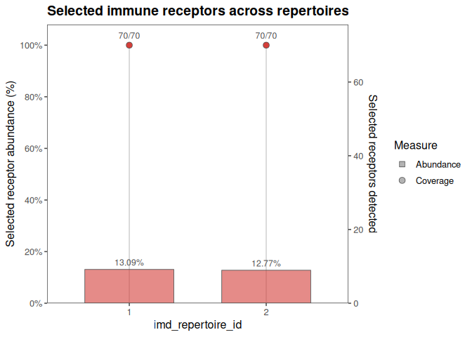
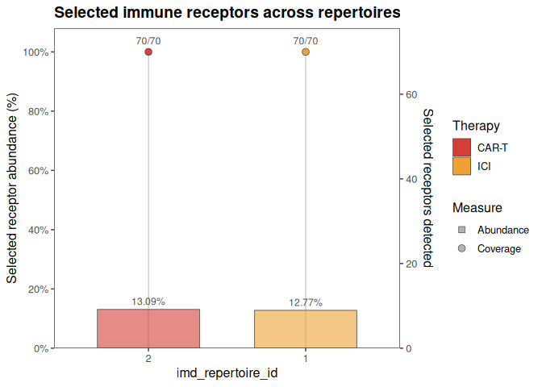

Select receptors by their incidence across repertoires or strata¶
Description¶
Select shared receptors, receptors private to a strata, or receptors
absent above an abundance threshold. Define one or more rules to select
receptors by their sharing and abundance in comparison populations using
make_public_filter().
Usage¶
vdj_public(idata, ..., output = c("immundata", "df"))
Arguments¶
idata |
An immundata::ImmunData object with defined repertoires. |
... |
One or more rules created by make_public_filter(). With
no rules, require presence in at least two input repertoires. |
output |
A character scalar: "immundata" returns a new
ImmunData, "df" returns a data frame
convenient to immediately pass to vis(). |
Details¶
Input counts and proportions are saved as imd_orig_count
and imd_orig_proportion. The input is unchanged. No
per-rule incidence columns or custom attributes are added.
Value¶
A new ImmunData or collected observation table.
Repeated calls¶
Warning: Applying vdj_public() to an
already filtered result overwrites imd_orig_count and
imd_orig_proportion with abundances from its immediate
input. Since proportions are recalculated after filtering, the saved
proportions no longer refer to the repertoire before the first call.
Keep the original ImmunData as a reference when calculating
percentages relative to the original repertoires. To apply several rules
to the same original input, pass them together in one
vdj_public() call.
Visualisation¶
Plot the selected receptors with vis(selected, plot = "public",
reference = idata), where idata is the original
input to vdj_public(). Alternatively, pipe
vdj_public(idata, output = "df") to vis(reference =
idata); its result class selects this plot automatically. The
ordinary observation rows in the collected output are unchanged.
Bars show abundance, the sum of the selected
identities' saved original repertoire proportions, read against the left
percentage axis. Dots show coverage, the number of
selected identities detected in each repertoire, read against the right
receptor-count axis. Dot labels give the detected/selected counts; bar
labels give abundance percentages. Observed occurrences below selection
thresholds still contribute to both measures. Coverage describes the
selected set, not the fraction of all receptor identities in a
repertoire. Individual receptor trajectories can be visualised with
vdj_track().
The required reference defines the complete input
repertoire population, retaining repertoires with no selected receptors
at zero. Use the selected result and its own original reference:
repertoire metadata is matched using the reference repertoire schema
because filtering can rebuild repertoire IDs. The reference does not
restore abundances overwritten by repeated vdj_public()
calls; the saved original proportions must refer to this baseline. An
empty selection cannot be plotted.
xval selects a repertoire ID or metadata column for the
x-axis; each value must identify one repertoire. fill
selects a repertoire metadata column for colour and defaults to the
defined strata when available. Repertoires are ordered by colour group
and x value; factor levels control their order. title
changes the title or removes it with NULL.
See Also¶
make_public_filter(), annotate_public()
Examples¶
library("immunarch")
idata <- get_test_idata() |> agg_repertoires("Therapy")
# Keep receptors shared across at least two repertoires.
shared <- vdj_public(idata)
shared$repertoires
#> # A tibble: 2 × 4
#> imd_repertoire_id Therapy n_barcodes n_receptors
#> <int> <chr> <dbl> <int>
#> 1 1 CAR-T 124 70
#> 2 2 ICI 122 70

# Work with repertoire and strata rules.
idata <- get_test_idata() |>
agg_repertoires(c("Response", "Therapy")) |>
agg_strata("Therapy")
vdj_public(idata, output = "df") |>
vis(reference = idata, fill = "Therapy")

#> # A tibble: 2 × 3
#> imd_strata_id strata_name Therapy
#> <int> <chr> <chr>
#> 1 1 Strata1 CAR-T
#> 2 2 Strata2 ICI
ici <- groups$imd_strata_id[groups$Therapy == "ICI"]
car_t <- groups$imd_strata_id[groups$Therapy == "CAR-T"]
# The test data has one repertoire per therapy, so use incidence >= 1.
in_ici <- vdj_public(idata, make_public_filter(
strata = ici, min_incidence = 1L
))
# Count distinct strata instead of repertoires.
across_therapies <- vdj_public(idata, make_public_filter(
incidence_by = "strata", min_incidence = 2L
))
# Present in ICI and absent in CAR-T. Collect the retained observations.
ici_only <- vdj_public(
idata,
make_public_filter(strata = ici, min_incidence = 1L),
make_public_filter(strata = car_t, max_incidence = 0L),
output = "df"
)
ici_only |>
dplyr::select(
cdr3_aa, v_call, Therapy, imd_orig_count,
imd_orig_proportion
) |>
head()
#> # A tibble: 6 × 5
#> cdr3_aa v_call Therapy imd_orig_count imd_orig_proportion
#> <chr> <chr> <chr> <dbl> <dbl>
#> 1 ASFPVLSPYNEQF TRBV28*01 ICI 1 0.00105
#> 2 ASRAGAGTGELF TRBV19*01 ICI 1 0.00105
#> 3 ASRWGTEAF TRBV19*01 ICI 1 0.00105
#> 4 ASRLGPNNEQF TRBV7-2*01 ICI 1 0.00105
#> 5 ASSYSEGVIYGYT TRBV6-5*01 ICI 1 0.00105
#> 6 ASSYGPQEGYT TRBV6-5*01 ICI 1 0.00105
# Select by repertoire IDs and require count >= 5 in an ICI repertoire.
ids <- idata$repertoires |>
dplyr::filter(Therapy == "ICI") |>
dplyr::pull(imd_repertoire_id)
abundant <- vdj_public(idata, make_public_filter(
repertoires = ids, min_count = 5
))
# All observations of passing receptors are retained throughout idata.